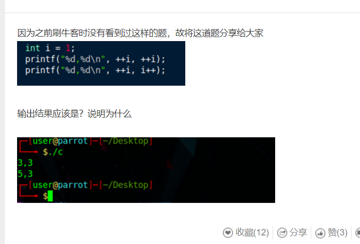
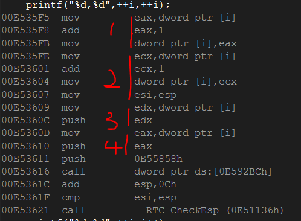
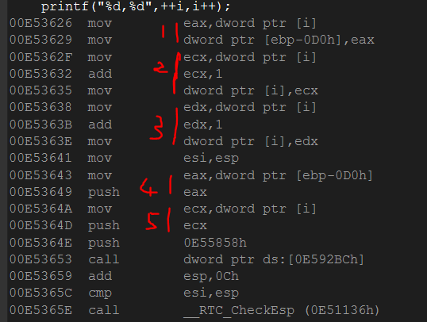

关于printf输出函数，曾经在栈和队列中有过提及，并未作过深入的研究，今天在看一些面经的时候发现有的公司有所提及，那么就势研究一下
面试题如下：

首先看一下printf函数在汇编层面上是如何实现的：
第一行

第一步，i = i + 1，i = 2;
第二步，i = i + 1, i = 3;
第三步，把 i 压入栈中
第四步，把 i 压入栈中，
那么第一行输入就相当于从栈中取出i 输入的就是 3，3
第二行

第一步，把i值存入寄存器【ebp-0D0h】中
第二步，i = i + 1,i = 4
第三步，i = i + 1,i = 5
第四步，把寄存器中的值压入栈中
第五步，把i的值压入栈中
那么同理，出栈的时候，输入的值就为5 ，3
针对这一题来说，需要明确两点
接下来此类问题都可以按照以上的方法进行考虑，又从网上找到了一些相关问题可以进行练习
1 int i = 1;
2 printf("%d,%d",i--,i++);
由++或者--运算的顺序是从右向左，故先计算i++，i++在计算过程中会产生缓存区，返回的值就是缓存区的值，既是在加1之前需要先备份，这里的缓存区地址就是[ebp-0E8h]=1，之后，i=i+1=2；同理，第二个表达式的缓存区[ebp-0ECh]=2,然后，i=i-1=1；然后把第一，第二个表达式的返回值分别入栈【1，2】故输出为 2 1
此类问题，不仅在面试当中需要注意，并且在日常编程中也尽量避免出现，相同变量在输入中同时出现的情况，作为小细节需要多加注意
2019-05-21 13:09:19 编程小菜鸟自我反省，大佬可以发表一下自己的建议和意见，谢谢！！！